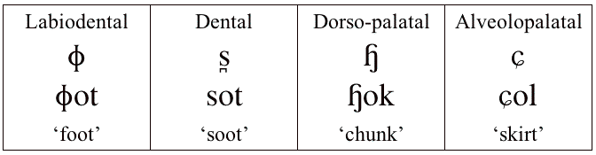

Swedish voiceless fricatives

Swedish has a sound, a dorso-palatal fricative, that has not been reported in any other language in the world. It is said to be a voiceless labial velar fricative somewhat like the sound of wh in some English dialects, combined with a voiceless postalvelolar fricative. This sound is a subject of much discussion among Swedish phoneticians. Some say that it is not very common, others that it is common in the Stockholm dialect of Swedish. Whether there are two simultaneous sources of friction is very much in doubt.
Thanks to Olle Engstrand for these recordings.